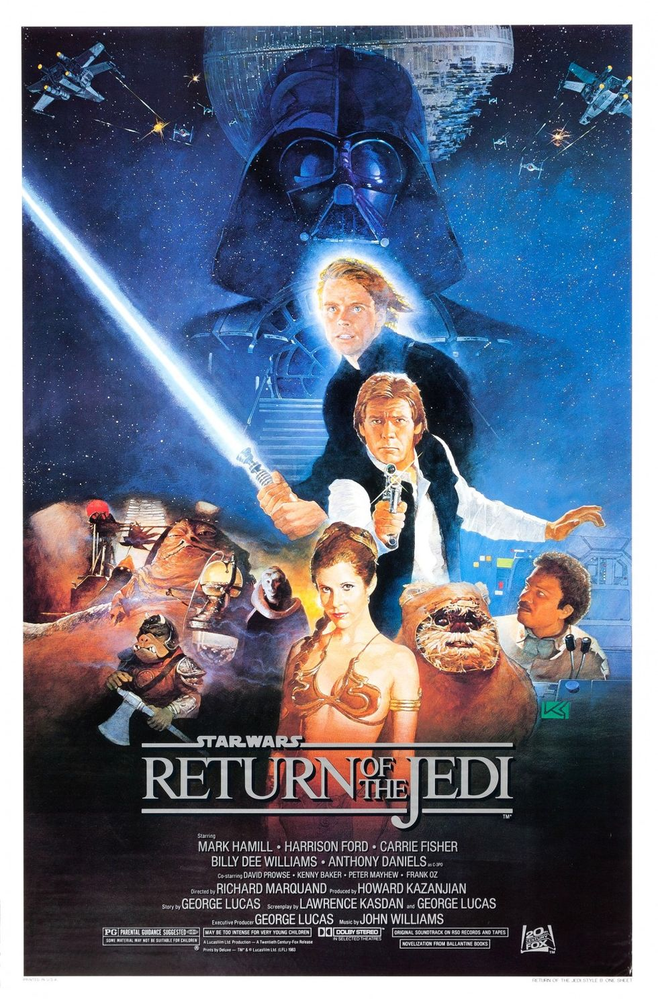
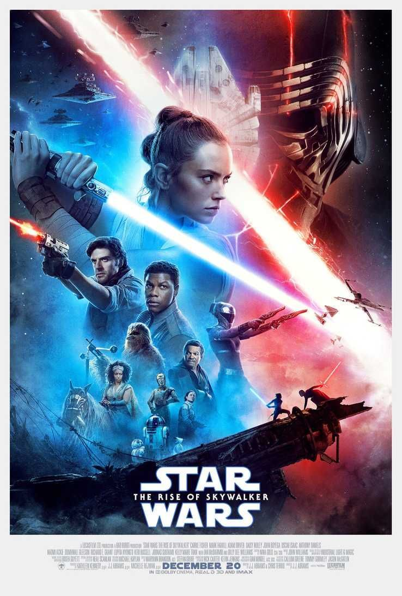

| Imagen |
Episodio |
Reseña |
Calificación |
Estreno |
 |
Episodio I: La Amenaza Fantasma |
La República Galáctica está en crisis. Los impuestos a las rutas de comercio al sistema estelar de Naboo son disputados. La cancillería está infiltrada por el señor Sith Darth Sidious, que planea tomar el control. |
4.1/5 |
1999 |
 |
Episodio II: El Ataque de los Clones |
Diez años después de los acontecimientos de Naboo, la Galaxia está al borde de la guerra civil. Bajo la dirección de un nuevo maestro, Anakin Skywalker se une a Obi-Wan Kenobi en una misión para proteger a la senadora Padmé Amidala de un misterioso asesino. |
4.3/5 |
2002 |
 |
Episodio III: La Venganza de los Sith |
La República se desmorona y desde sus cenizas surge el temido Imperio Galáctico. Anakin Skywalker, ahora convertido en el temible Darth Vader, ayuda a Palpatine a ejecutar su maquiavélico plan para destruir a los Jedi. |
4.5/5 |
2005 |
 |
Episodio IV: Una Nueva Esperanza |
Un joven granjero llamado Luke Skywalker se une a un grupo de rebeldes para combatir al malvado Imperio Galáctico y rescatar a la Princesa Leia, llevando consigo a un viejo Jedi llamado Obi-Wan Kenobi. |
4.7/5 |
1977 |
 |
Episodio V: El Imperio Contraataca |
La Rebelión lucha contra el Imperio Galáctico mientras Luke entrena con el Maestro Yoda en el planeta Dagobah. Mientras tanto, Han Solo y la Princesa Leia son perseguidos por las fuerzas imperiales. |
4.8/5 |
1980 |
|  |
Episodio VI: El Retorno del Jedi |
La Rebelión planea una operación para destruir la nueva Estrella de la Muerte. Mientras tanto, Luke Skywalker intenta redimir a su padre, Darth Vader, y derrotar al Emperador Palpatine. |
4.7/5 |
1983 |
|
Episodio VII: El Despertar de la Fuerza |
Una nueva amenaza surge en la galaxia en forma de la Primera Orden. Rey, una joven chatarrera, se une a la Resistencia y busca a Luke Skywalker, quien ha desaparecido. |
4.6/5 |
2015 |
|
Episodio VIII: Los Últimos Jedi |
La Resistencia liderada por Leia Organa se enfrenta a la Primera Orden. Rey busca entrenamiento con Luke Skywalker mientras Kylo Ren lucha con su pasado y su relación con Rey. |
4.4/5 |
2017 |
|  |
Episodio IX: El Ascenso de Skywalker |
La Resistencia se prepara para la batalla final contra la Primera Orden, mientras Rey busca su lugar en la galaxia y enfrenta su conexión con el malvado Emperador Palpatine. |
4.3/5 |
2019 |